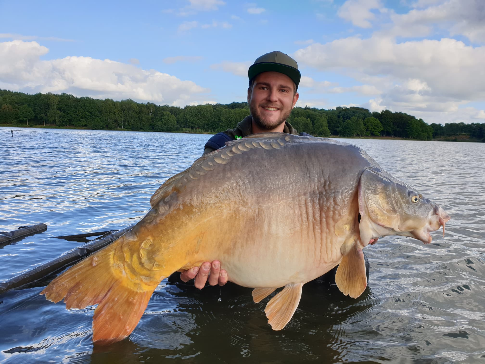
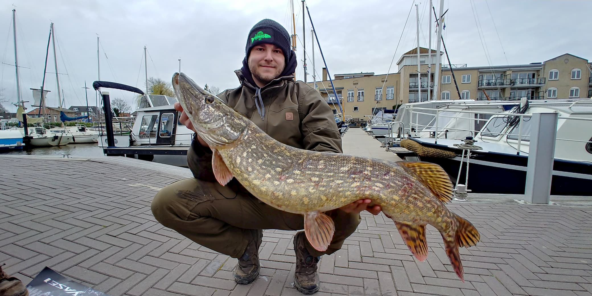
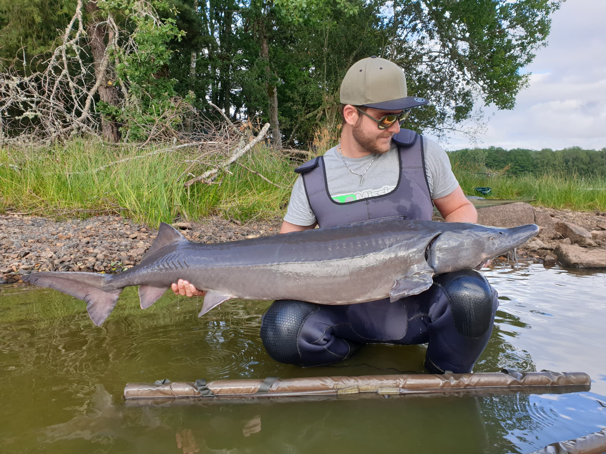
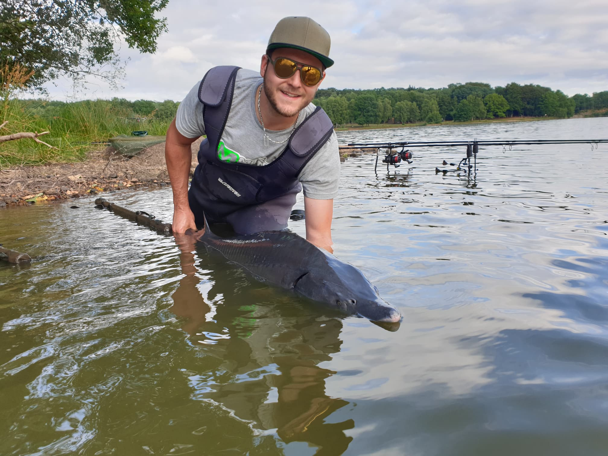
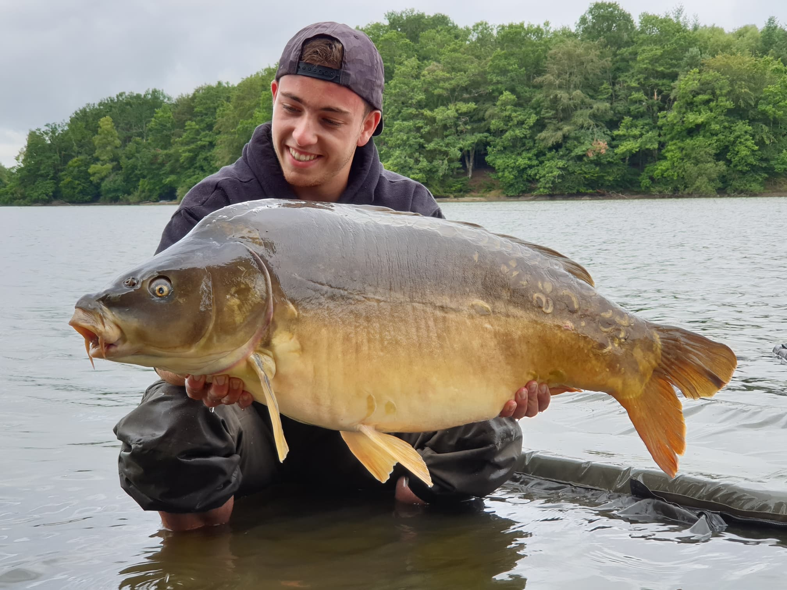
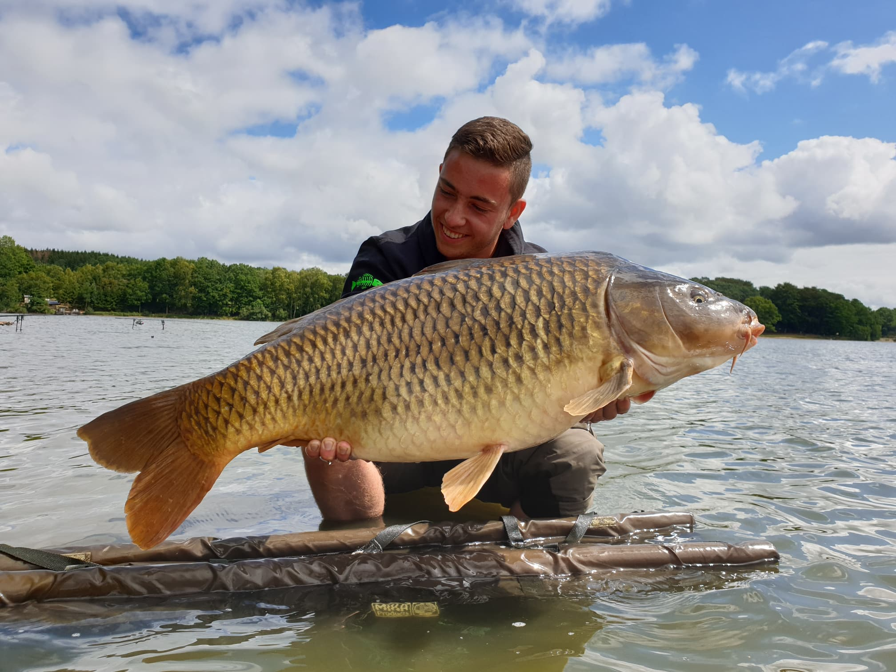
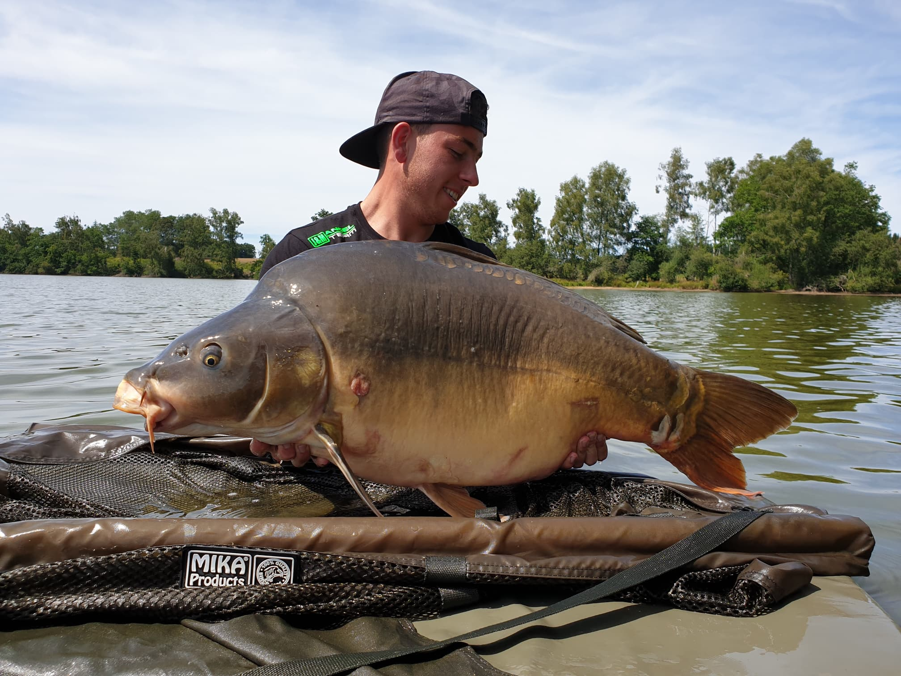
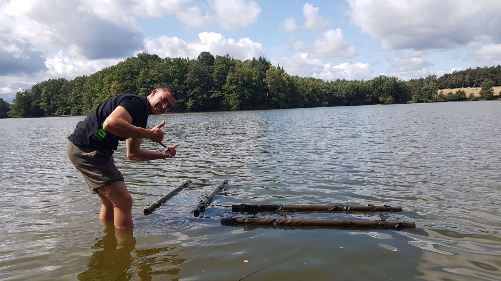

Jonas Happle




Steckbrief
- Alter 23 Jahre
- Beruf Entwicklungsingenieur Elektrotechnik
- Region Schwarzwald/Baden-Württemberg
- Lieblingsgewässer Große Naturseen
- Lieblingsfisch Karpfen
- Größter Fang Karpfen 20,5kg; Stör 147cm
- Tollster Fang gelber (Koi-)Karpfen
Über mich
Meine Begeisterung zum Angeln wuchs bereits als kleines Kind,
da mich mein Vater zu vielen Angelausflügen mitnahm. Im Laufe
der Zeit lernte ich viel Neues dazu und optimierte alte
Vorgehensweisen. Die anfängliche Begeisterung wurde zunehmend
zu einer wahren Leidenschaft, die mich bis heute in ihren Bann
hält. Vor einigen Jahren entstand das YouTube-Projekt „J&M Angel“,
das ich damals zusammen mit Mike ins Leben rief. Mittlerweile
sind wir mehr als ein Projekt, mehr als ein YouTube-Kanal und
auch mehr als ein Team. Ich sehe uns eher als kleine Familie,
die in allen erdenklichen Situationen zusammenhält und sich unterstützt.
Das facettenreiche Karpfenangeln hat es mir am meisten angetan.
Hierbei kann ich den Stress und den Alltag einfach hinter mir lassen
und die Zeit am Wasser genießen. Ich hoffe das wir dir in unseren
Videos einige hilfreiche Tipps und Trick zeigen können und dich gut
unterhalten.
Petri Heil! Euer Jonas
Petri Heil! Euer Jonas
Nico Brutsche




Steckbrief
- Alter 19 Jahre
- Beruf Elektroniker für Betriebstechnik
- Region Schwarzwald/Baden-Württemberg
- Lieblingsgewässer Natursee/Baggersee
- Lieblingsfisch Karpfen, Hecht
- Größter Fang Karpfen 20,5kg; Wels 140cm
- Tollster Fang Freue mich über jeden Gefangenen Fisch, egal wie groß oder schwer
Über mich
Meine ersten Angelerfahrungen sammelte ich in meinem
zwölften Lebensjahr, in diesem Jahr ging ich immer öfter
mit Mike los. Nachdem wir zusammen den Angelschein gemacht
hatten, trat ich einem Angelverein bei, in dem ich Jonas
kennenlernte. Zusammen haben wir bereits viele tolle
Sessions erlebt und ich freue mich auf viele weitere.
Meine zweite Leidenschaft gilt dem Fitnessstudio,
hier verbringe ich den Rest meiner Freizeit.